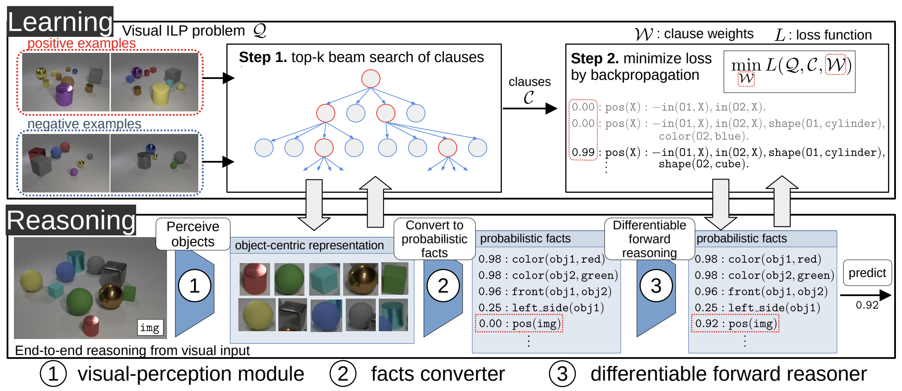

Architecture Overview
An overview of alphaILP. alphaILP has mailny two components, the reasoning and learning architecture.
(Reasoning) alphaILP has an end-to-end reasoning architecture from visual input based on differentiable forward reasoning. In the reasoning step, (1) The raw input images are factorized in terms of objects using the visual-perception model. (2) The object-centric representation is converted into a set of probabilistic facts. (3) The differentiable forward reasoning is performed using weighted clauses.
(Learning) To solve the classification problem of visual scenes, we provide positive examples, negative examples, and background knowledge. Each example is given as a visual scene. alphaILP performs 2-steps learning as follows: (Step1) A set of candidates of clauses is generated by top-k beam search. The search is conducted from examples of visual scenes using the end-to-end reasoning architecture. (Step2) Then, the weights for the generated clauses are trained to minimize the loss function. By using the end-to-end reasoning architecture, alphaILP finds a logic program that explains the complex visual scenes by gradient descent.